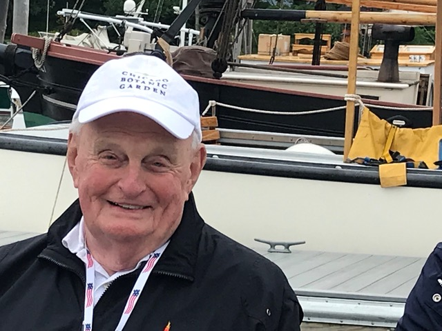
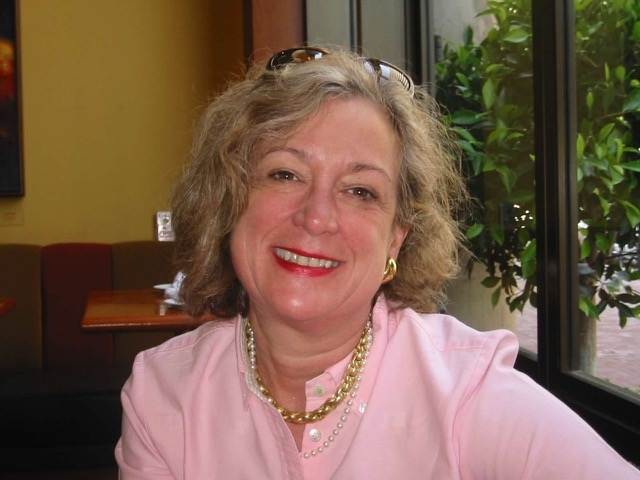
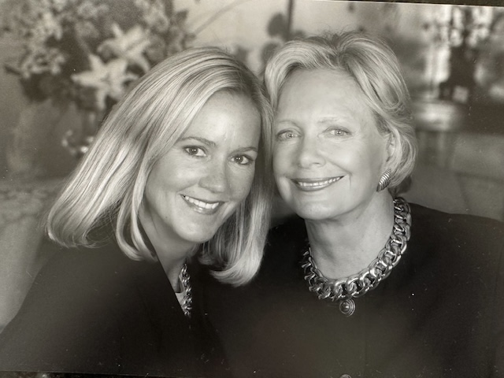
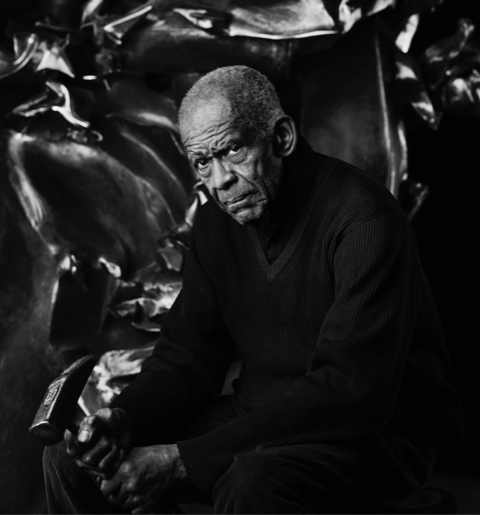
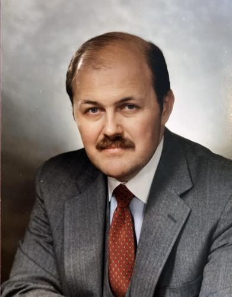
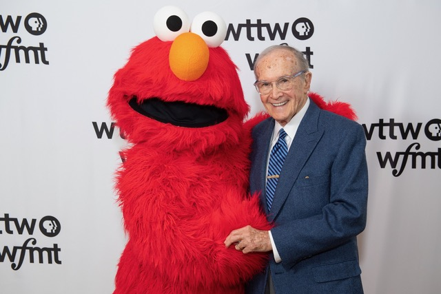
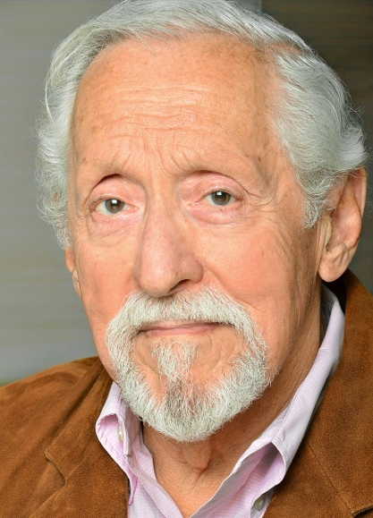

By The Classic Chicago Magazine Staff & Friends
With these brief snapshots of wonderful people, many of whom have appeared on our pages, we honor those we have lost this year and wish we could honor all whom you have lost as well. We will remember them always. If you dreamed about them, you’d wake up smiling. Those were the sort of friends they were.
Ted Bell
Wouldn’t every American man yearn to have had the glamorous career success of Ted Bell? Twice. After rising to the summit of the advertising world with three of the nation’s great midcentury agencies, Doyle Dane Bernbach, Leo Burnett, and Young & Rubicam, Ted gave it all up to become a best-selling novelist, frequently compared by reviewers to Ian Fleming. And he began it all when he was little more than a boy. At the age of 25, he sold his first screenplay to Hollywood and a bit later became the youngest vice-president in the history of DDB.
Chicagoans well remember the entry of Ted and his beautiful wife, Evelyn, into their lives in 1982—to be joined in 1985 by the birth of an equally charismatic daughter, now the American actress and model Byrdie Bell. They were quite a trio around town as Ted rose from creative director to—at age 40—president and chief creative officer of the Leo Burnett Company in Chicago. In the early nineties, the trio was back in New York where Ted became vice chairman and worldwide creative director of the then world’s largest ad agency Young & Rubicam. While there, he and his collaborators won seven Clio advertising awards, three Cannes Gold Lions awards in creativity and the Cannes Lions Grand Prix award.
In 2003, Ted Bell, advertising superstar, became Ted Bell, best-selling novelist, with string of The New York Times best-sellers structured around a titled British billionaire/spy, Lord Alexander Hawke, whose James Bond-style adventures included such activities as saving the kidnapped heir to the British throne.
Ted died on January 20, of an intracerebral hemorrhage, a type of stroke, in Hartford, Connecticut. He was 76. —By Megan McKinney
David Bisterfeldt DDS
Dr. David Bisterfeldt was my handsome, brilliant, and perfectly delightful dentist. Perhaps he was your dentist too in his practice at Northwestern Dental Center in Galter Pavilion. If so, you were surely as devastated as I and so many others to learn of his sudden death at a shocking young age on October 17, the eve of his 40th birthday.
Officially, Dr. Bisterfeldt specialized in oral and maxillofacial surgery. He had been a dedicated student, graduating at the top of his high school class, and matriculating at Benedictine University. He then graduated as valedictorian from the University of Illinois at Chicago College of Dentistry in 2010. He had studied diligently at both universities and, according to legend, memorized his textbooks.
Dr. Bisterfeldt first became a father in 2011 when his daughter, Harper, was born. In 2015, he married clinical psychologist Dr. Tracy Schafer, who is affiliated with Rush University Medical Center, specializing in Geriatrics Services, and became stepfather to her son, Deacon. On October 1, 2016, Drs. Tracy and David Bisterfeldt became parents to their son, Owen, when “the little guy” was born, bringing us all to view them as the ideal blended family. —By Megan McKinney
Jean Brown
Always a seeker of knowledge and adventure and a dedicated docent at the Institute for the Study of Ancient Cultures, formerly the Oriental Institute, Jean Brown frequently tied on a a brightly colored scarf and always faced the world with joy and commitment. Two friends told us more about her. First, The Reverend Luke Back, Rector of Church of the Holy Spirit in Lake Forest.
“The Church of the Holy Spirit has planned six pilgrimages to the Holy Land in six years. Jean wanted to go every time. She had traveled around the world seven times, but the Holy Land, Jordan, Egypt and Jerusalem in particular abided as her heart’s favorite. She longed for a return to that ancient city and prayed for its peace. There were several things she was certain of. She loved her family and she loved the church. Giving to the Food Pantry was easy for Jean, and her last concerns in life were about those facing food insecurity. Donating to the Food Pantry was her favorite gift to give. It was so concrete and did such immediate obvious good.”
And from Mimi Murley: “I encountered Jean mostly in church and at Coterie, a Women’s essay group, where she was a faithful attendee. Always curious, a true seeker with adventures across the globe. She was a big supporter of the Oriental Institute at the University of Chicago and more I am sure. Always bright, attentive, and interesting I enjoyed her company.” —By Judy Carmack Bross
Melfort Campbell
World events helped define Melfort Campbell’s life.
His mother, Princess Catherine Galitzine of Russia, was thrown out of the country during the 1917 revolution. At age 17, Campbell fought in World War II for the British Royal Navy.
When he was on survivor’s leave after his boat was torpedoed, he danced with the future Queen Elizabeth of England. After she took him to meet her father King George, Campbell shared with family and friends throughout his life what happened next: he joked that Elizabeth decided to dump him. Many enjoyed that story as it showed his self-deprecating manner.
As a young man, he left his adored Scotland for the United States. His first job involved selling books at Scribner’s Fifth Avenue store in New York. When Gloria Vanderbilt asked to put books on her house account, the young clerk checked if her credit was any good.
His aunt, Aleka Romanoff Armour, and his uncle Nick Galitzine lured him to Lake Forest, where he married the girl next door, Barbara Hubbard. During his 35 years at Allstate, he built the international operations from scratch.
He played golf for nearly all of his 98 years. At age 90, Campbell was still shooting his age at places such as Onwentsia and Old Elm. (There was family precedent for golf success; his father had been the top one-armed golfer in Scotland.) Campbell was always humble on the course; upon hearing yet more praise after hitting another great shot, he would merely say, “It’s playable.”
There was another phrase he uttered often and tried to drill into his three children: “Manners maketh man,” he would say. The gentleman of the old school is certainly proof of that. –By David A. F. Sweet
Jim Crown with his wife, Paula
Jim Crown
Jim Crown wore the mantle of patriarch for not only the Crown family but also as a patriarch of the city of Chicago where his brilliant involvement, philanthropy and genuine warmth made all the difference in helping people who needed a future and organizations effect their staying power.
For those who knew him such as his neighbor Charlie Gofen: “He was hugely devoted to his family, and his and Paula’s love and generosity helped shape their kids into wonderful people.” How right Charlie is, those who saw the Crowns together, all supporting one another at Latin School occasions and community events, knew how family love motivated each of them, how Covid days in Palm Springs were so blessed as a time to be together and how the real meaning of patriarch relates to the importance of family.
A grandson of industrialist Henry Crown and the chief executive of Henry Crown & Co., he died in Colorado in June. At the time of his death his father Lester paid him the highest tribute: “There never was a finer human being in every way. He was the leader of our family both intellectually and emotionally, and he looked out for everybody. He also was a great leader also for the community. It’s just a heartfelt loss. There are no words that can express it.”
A member of the Commercial Club of Chicago, he announced just before his death that he and other Chicago corporate leaders were committed to finding jobs for as many as 10,000 young men. Chicago Mayor Brandon Johnson spoke for our City:
“Jim gave back to the city through philanthropy and leadership on a number of civic and academic boards as he was deeply committed to investing in Chicago and its people. With his generosity, Jim truly embodied the soul of Chicago. I was especially grateful for his commitment to work collaboratively with my administration to build a safer Chicago, having met recently to share ideas.” —By Judy Carmack Bross

James Glasser
No one could have better defined the description “a force for the good” than Jim Glasser, CEO for 22 years of GATX, who led such major organizations as the Chicago Community Trust which he chaired for seven years and was credited with saving that philanthropic organization which impacts so many non-profits. He chaired the Streeterville Society for Northwestern Medical Center for 25 years, was Vice Chair of the Chicago Botanic Garden (Chicago Horticultural Society) and ran their major fundraising campaign, served as Chair of the Lake Forest Hospital Board, worked for years on the “Music and Dance Theater” which ultimately became the Harris Theater, was one of the driving forces that created Voices for Illinois Children with Nancy Stevenson.
At the time of his death in March Terry Mazany, a former Chicago Community Trust president and CEO: “Beyond saving the Trust from the loss of vital unrestricted assets that would have rendered the foundation far less significant in tackling the growing challenges facing Chicago, James Glasser as chairman ushered in the modern vision of community foundations as civic leaders, not simply charitable banks, and invited the diversity of Chicago into the boardroom so that the Trust truly reflected and represented the diversity of the communities it serves.”
Danny Glasser told us: “ To many, Jim Glasser was a larger than life figure who was both imposing in his stature and his intellect, but to those that knew him best, including his children, he was a devoted friend and loving father. He leaves a legacy of meaningful service and civic engagement.”
Always a delight to talk who always showed a genuine concern for others, he was a proud father of three children and husband to Louise who told us: “Beside being an outstanding citizen, Jim was fun! He loved travel, books, art, music and to have a good time. And he loved his children, grandchildren and his dogs. He was always able to find time to help anyone who came to him for advice and was incisive in is thoughts and suggestions both personally and in business. We miss him.” —By Judy Carmack Bross
Bill Gofen
Over a 63-year career, Bill Gofen helped build Gofen and Glossberg into one of the largest and most prominent independent investment counseling firms in Chicago. Clients treasured his wise guidance, colleagues appreciated his unflappable demeanor, and everyone loved his warmth and humor. He was also deeply committed to volunteer work, serving on numerous nonprofit boards over the years and teaching a popular investment course at what was then known as DePaul University’s College of Commerce.
On a personal note, he wasn’t by any stretch an overinvolved helicopter parent, but he did provide nudges at a couple key moments in my life. In my sophomore year at Stanford, I was spending so much time working at the student newspaper that I essentially dropped out of school, completing only 6 units one quarter instead of the 15 that were the norm. (The only two things I got credit for that quarter were a Shakespeare course and Judo Club.) For my father, who maintained high expectations for my sister and me, my poor academic showing was sharper than a serpent’s tooth, and he sent me a caustic letter letting me know that I needed to get my act together and graduate in four years or I would be paying my own tuition. The nudge worked, and I not only ended up graduating on time but eventually went on to work beside him in the investment business for three decades. I learned valuable lessons from him about service, leadership, and integrity. He was a great professional, and he was also a great father. —By Charlie Gofen

Jane Heenan
Jane Budelman Heenan died peacefully on August, 30th 2023. She was without a doubt one of a kind. She was a dedicated wife, mother, grandmother and friend and also had deep roots within the cultural and civic life in Chicago serving on the Woman’s Board of Northwestern Memorial Hospital for 40 years. To my mom, people were where she drew her strength and helping others and focusing on their needs was a gift she continuously gave to the great joy of those who knew her.
My mom’s kindness and generosity was most notable with her family. For 34 years she was a caring and loving wife to my dad, Tom Heenan. After he died, she connected with Bill Cox and was married to him for 7 wonderful years until his death. I don’t think I have seen anyone compare to my mom in terms of truly defining what it means to love and to be married in sickness and in health. With her two husbands, her children and her grandchildren, she sacrificed for everyone and she never asked for acknowledgement or praise or gratitude. Her kindness and generosity were unwavering simply because she loved us.
My mom especially loved being a grandmother and adored being around her grandchildren, Adeline, Helen, Thomas and Ollie. She was a constant presence in her grandchildren’s lives, whether it was at birthday celebrations at the Rainforest Café, sleepovers, baking cookies, gardening at Dune Acres, trips to the toy store or passing down her sense of fashion to the younger generation. Whether my mom was sitting by the fire enjoying a morning cup of coffee, having a picnic on the beach at Dune Acres with her grandchildren or enjoying a glass of wine with her friends, she was magnetic and always brought out the best in others. Helping others and focusing on their needs was a gift she continuously gave to the great joy of those who knew her.
Jane also cared deeply about her friends and her community. A friend of hers reflected that: “Jane was a rare personification of pure joy.” Given her generosity with friends and her community she was a beloved figure in many people’s lives. Although we will miss her desperately, we will continue to celebrate her life and her joyful spirit that she shared with each of us. —By Lydia Heenan Marshall

Pat Hindman, right, with her daughter Leslie HindmanPat Hindman
My mother, Patricia DeForest Hindman, died the day after Thanksgiving at the age of 92. She was a warm and wonderful woman and a great mother. She was also very quick witted and tons of fun.
In many respects her life was defined by the era in which she lived. She and my father, Don J. Hindman, lived in Hinsdale and at Ocean Reef Club in Key Largo, Florida. He is still going strong at age 97. They were married for 72 years. She was a member of The Junior League, The Antiquarian Society, The Woman’s Board of the CSO, The Alliance Française, and was 1st Vice President of the Woman’s Athletic Club. She threw a great party and had a wide circle of friends.
But here is what her close friends and family knew. My mother loved nature. She grew up on the Northwest Coast of Washington, loved hiking, camping, and running around barefoot on the beach. She loved the woods…. the smell, the sounds. She loved rain. When we were kids and there was a huge storm, we would all go outside to lie on the grass and let the rain pour down. We would laugh and she would say “Isn’t this wonderful! What’s a little rain? A little rain never hurt anyone”. My mother had a lifelong interest in poetry, especially Edna St. Vincent Millay, and read to us and encouraged us to memorize poems that I can still recite today. She loved the history of art and architecture.
She was somewhat of an adventure junkie. She always had a convertible sports car and liked to drive fast, often down dirt roads. She took flying lessons when we were in high school, and we occasionally got to go with her to practice taking off and landing. I was always terrified!
She loved a practical joke. For example, my parents once left a party and put pink flamingos on about 20 friends’ front yards and their own and went back to the party. The next day everyone wondered who had done that and mom and dad never let on.
I will always hear her laughter and will miss her kind spirit. —By Leslie Hindman

Richard Hunt
A visit to Richard Hunt in his studio was like stepping into one of his magnificent sculptures, only this one vaster, grander and even more multi-dimensional as the privileged viewer felt he was inside looking out through the wonder glass.
Decades and decades of completed work, work underway, an incalculable array of components awaiting Richard’s artistic disposition along with the machines and tools required to make sculpture in metal were all considered, arranged and placed to combine for a mis-en-scene of the most powerful artistic order.
Breathing it all in on my last visit to discuss a special commission, I knew it was a glimpse into his soul. Richard was a gentle, sweet soul. A real gentleman in every sense. Vale Richard. —By Todd Schwebel
Stanley Johnson
Stanley Johnson was a North Michigan Avenue celebrity—both in the way in he was regarded, and in his personal manner. Stanley presided with style over R. S. Johnson Fine Art for more than sixty-five years, adding not merely to fine collections of fellow Chicagoans but also to more than seventy museums, including New York’s Metropolitan Museum of Art and Museum of Modern Art, The Art Institute of Chicago, The National Gallery of Canada and the Musée d’art et d’histoire in Geneva, Switzerland.
Always by his side, both socially and in the gallery, was his exquisite wife, Ursula. Stanley was 94 when he died of pneumonia in September, also leaving their daughter, Geraldine, and son, Gregoire. —By Megan McKinney

Scott Marks
Scott Marks who passed away in October was a leading member of the banking community during his long tenure at First Chicago. He served as a national director at Visa and came up with the innovative concept of connecting credit card purchases to airline miles. His Visa staff remembers him as a wonderful boss with a terrific sense of humor who loved to surprise them at office Christmas parties. One year he arrived on horseback wearing a cowboy gear.
Very philanthropic and civic minded, he was a Life Trustee of the Field Museum, a past Board Chair of WBEZ, and a member of the Cor Vitae of the American Heart Association. A dedicated member of St. Chrysostom’s Church, Scott served on the Vestry, the finance committee, and chaired the Rector Search Committee.
Scott enjoyed flying his own plane and was an expert boatman. Trained as an engineer at MIT, he designed a beautiful retirement home in the Blue Ridge Mountains above Hendersonville, North Carolina. He is survived by his wife Pam and his three adult children. —By Mary Ellen Christy
Andrew McKenna
I first met Andy McKenna in 1983. He hosted my father and I and others in what was one of the first luxury boxes in Wrigley Field, though luxury was a misnomer in those bare-bones seating arrangements. He was gentlemanly and extremely easy to speak with, considering he was the most important man in the park as the Cubs’ president (and had formerly run the White Sox).
In 1984, he offered my Dad four great seats for the expected three World Series games at Wrigley Field. “Don’t tell anyone where you got them from,” he joked, as no doubt he was being bombarded with requests. Alas, the Cubs collapsed while trying to win the National League pennant against the San Diego Padres.
He was always accommodating over the years, serving as a source for my book on Lamar Hunt (McKenna owned a stake in the Bears, and he told my Dad it was one of his best investment ever) and sharing his thoughts for a story on Jack Sandner after his great friend passed away.
His business success is well-known: chairman of McDonald’s, president of Schwarz Paper Co., on the board of directors of other major firms. McKenna loved the University of Notre Dame, where he served as chairman of its board. He survived two bouts of rheumatoid fever as a child and ended up living to 93 – gracious, generous and humble to the end. — By David A. F. Sweet
Alice Moss
Hands-on service defined the life of Alice Moss, both in her career at DePaul University where she was a faculty member for 25 years in the Early Childhood Education Program in the School of Education and at St. Chrysostom’s Church where she continued to prepare and deliver bagsful of sandwiches for the church’s food ministry while struggling with severe health challenges. Beloved by her students whom she took to program sites around Chicago, she personified both the informed volunteer who always found a way to say yes and the skilled professional who knew how crucial field experiences were for her students. “Just Alice” was how she asked people to think: her efforts were essential and much missed.
Before joining the DePaul faculty she worked in the Chicago Public Schools’ early childhood programs and their administrative branch for 40 years. While at CPS, she spearheaded the design and development of the district’s preschool program model that remains in place today, a testament to her vision and acumen, as well as respect, in understanding the needs of Chicago’s young children and their families. A colleague at DePaul wrote: She contributed much to the vibrancy of the program and its reach within and beyond Chicago. Her unflinching devotion, care and dedication were an inspiration to all who knew her.” —By Judy Carmack Bross

Newton Minow
Newton Minow was a national treasure. He loved his family, community, country, and his firm. He was a visionary, a life-long learner who never stopped teaching, communicating, creating, encouraging, advising, advocating. He was a champion of the public interest. His decades of accomplishments include: Presidential Medal of Freedom, 2016, (President Obama); US Army, WWII, China-Burma India Theater, New Delhi; Clerk, US Supreme Court Chief Justice, Fred M. Vinson; Chair, FCC, appointed by President John F. Kennedy, 1961; major role in creating PBS, WTTW, Sesame Street; powerful advocate for Congressional authority to launch first communications satellites; Chair, bipartisan Commission on Presidential Debates; Chair, RAND Corporation; Trustee, Notre Dame University and Northwestern University; Peabody Award and Woodrow Wilson Award for Public Service. The following recollections are drawn from “A Celebration of the Life of Newton N. Minow- September 20, 2023.” The complete program is included here as a link, with kind thanks to Nell, Martha, and Mary Minow, his three adored daughters (and frequent co-authors). Additional contributions are from John Levi, Newt’s distinguished law partner of 50 years. Here are selected personal reflections:
Nell Minow:
Nell recounts her parents’ first meeting: Mom was studying in her sorority house at Northwestern University when one of the other girls came in from the library. Mom asked, “Anything happening there?” “No,” the girl said, “no one is there except Newton Minow.” Mom gathered her things and decided she needed to study in the library, too. And the rest is history… The day my Dad gave his “Vast Wasteland” speech to the National Association of Broadcasters (May 9, 1961), he went back to the FCC, signed the original license for WETA, Washington DC’s public television station (called “Educational Television” until my Dad initiated the legislation to create PBS), and then flew home to Chicago so he could attend my Brownie Father-Daughter dinner. Then, he went back to the airport and flew back to Washington. A few years ago, we found a note to my Mother from my Dad on a FCC notepad asking her to confirm the date of the Brownie dinner and noting he was giving a speech that morning… Dad never rode in a cab without learning the entire life story of the driver. He was a great, great listener, asked thoughtful questions, and had the most buoyant, joyful, generous curiosity… Dad was a master storyteller. He had a deep understanding of the essential elements that make a story. He recognized the importance of stories to create empathy, to inspire, to teach problem-solving and the consequences of judgement, good and bad, and most of all as the best way to create connections, a sense of intimacy, a shared world. I’ll be telling his stories forever, and I know you will, too.
Martha Minow:
The values of the Great Generation: courage, commitment to others, and better the world- that’s Dad. He came back from WWII and forever remembered how the world is one and how to cherish home. Dad and Mom had a true love affair, a loving marriage of equals through 72 years…They adored and thoroughly helped one another. Mom taught Dad how to pace a joke, how to take a career risk. Dad taught Mom how to drive, urged her to write children’s books. Dad and Mom celebrated their children and grandchildren: a united force in our lives and in the world… Dad loved, loved, loved his family. Family always came first. And his friends became family, and their families became friends. He made friends with people he met in an elevator, a taxi… Beautiful notes about him have come from a cafeteria worker, a security officer, journalists, people who tell us he changed their lives with advice, help getting into a good school, securing immigration, mentoring their children… Earlier this year he and I wrote a plan for self-regulation by social media companies. Our essay was published after Dad passed away. He had already given me a list of people to share it with.
Mary Minow:
Eight years ago, I gave Dad a WWII Veteran’s cap, and he wore it A LOT. It was a joy to behold him in the cap. I could see the young man in his eyes every time someone stopped him on the street to thank him for his service. He wore it one day to Wrigley Field. The Cubs briefly picked him up on their camera. A man sidled up to Dad and said, “I know you, you’re famous!” He pointed to Dad’s WWII hat. “I SAW YOU ON THE JUMBOTRON!” I wondered whether the man recognized Dad’s contributions to PBS, to the Presidential Debates, to countless other possibilities… Dad enlisted in the Army in 1943 at age 17. He was there for three birthdays. Two months after he returned at age 20, he wrote a long reflection that is preserved at the Library of Congress Veterans History Project. I share some of that with you now: “I learned in the war that the world is not different but the same, and that peace is the greatest gift of all…we must pay all our lives for peace- in understanding, in work, in hope, and in prayer. And we shall. Newton.”
John Levi:
Newt Minow was mentor, law partner, dear friend, and “second dad” to John Levi. John speaks in glowing terms of Newt’s determination in the early 1980s to establish and maintain a partnership in Chicago between Sidley Austin and CPS Kanoon Elementary Magnet School in Little Village. “Newt had been asked by Chicago Magazine, as the City approached its 150th birthday, to identify what was important for the City’s future. Newt responded: ‘Invest in the publics schools.’ Reading this, the enterprising principal of Kanoon called Newt and asked him if our firm would adopt her school. He immediately involved me in that effort. Under the firm’s guidance, many opportunities were offered to students, faculty, and staff including mock trials for middle schoolers, government, the Constitution, and lawyers in the classroom discussing their role in our legal system. Investing in school technology continues to this day. Suzuki violin, Folkloric dance, Cinco de Mayo and Dia de los Muertos observances, book chats, school supply and Thanksgiving food drives, and field trips to special places were included.” John Levi is currently the co-chairmen of this 40-year initiative Newt forged. It is the longest running continued adoption of a Chicago school by a Chicago area firm. Martha Minow notes, “After my sister Mary reconnected them, the school principal at that time wrote to Dad not long ago: ‘The best thing that ever happened to me and to our Kanoon Community was your personal involvement with us; know that I treasure your mentorship and assistance and find it to be the highlight of my professional and personal life.’”
More on Minow here: https://docs.google.com/document/d/1QdNq0q_I4quhWMdpmsMHmp0sGsT7EUm06h2kWWqSBmg/edit?usp=sharing
—By Susan S. Aaron

Mike Nussbaum
A century ago, Chicago was fortunate to be the birthplace of Myron G. Nussbaum, known to Chicago theater-goers as Mike Nussbaum, the beloved actor and director who died just short of his 100th birthday in December. Delighting Chicago and Broadway audiences for decades, Nussbaum first acted in Chicago’s community theater arena, where he fortuitously met playwright David Mamet. He would go on to appear in such Mamet plays as “GlenGary Glen Ross” and “American Buffalo” where he originated the role of “Teach.” His range was extraordinary; at Chicago Shakespeare Theatre alone he played both Shylock in the “Merchant of Venice” and one of the witches in “MacBeth.” Nussbaum was a TimeLine Theatre Associate Artist, where he played in “The Price,” “Bakersfield Mist,” The Apple Family plays: “That Hopey Changey Thing” and “Sorry.”
Not limited to live theater, Nussbaum appeared in 20 films including “Men in Black,” and “Field of Dreams.” He also appeared in commercials for United Airlines, Scope mouthwash, and Chicago’s Northwest Federal Savings. He focused primarily, however, on Chicago theater. He was the recipient of 6 Joseph Jefferson Awards for his wide-ranging Chicago appearances. Known for his sense of humor and his consummate professionalism, he is said to have had a photographic memory. He was married to Annebe Brenner until her death (1949-2003) and then to Julie Brudios; he had three children with his first wife. —By Elizabeth Richter
Merle Reskin
Chicago native Merle Reskin was a performer from early life, transferring directly from participating in music and drama at Chicago’s Latin School for Girls to the American Academy of Dramatic Arts in New York. While studying professionally in Manhattan, she was also featured on radio and television. Because she arrived in New York at the height of the Golden Age of TV drama, the multi-talented Merle was soon included in casts of first-rate television productions on such esteemed dramatic programs as “Studio One,” in which she had roles in more than a dozen. After auditioning for the great twentieth century theatrical composer Richard Rodgers, Merle Muskal—as she was then known—landed the role of Ensign Janet MacGregor in the Broadway hit “South Pacific.”
Following her marriage to Chicago real estate entrepreneur Harold Reskin, Merle focused on raising a family and philanthropy, which was often arts directed. Although she died at 93 on November 1, Merle’s star will continue to shine in Chicago with DePaul University’s Merle Reskin Theatre at 60 East Balbo Drive—which was featured in a Classic Chicago article last month—and the Merle Reskin Garage Theatre at Steppenwolf Theatre Company. —By Megan McKinney
Peter Willmott
Peter Willmott was a faithful and generous parishioner of St. Chrysostom’s Church, Chicago. And anyone who knew Peter knew about his love for Williams College. Shortly after I came to Chicago as Rector of the parish, Peter and Michelle invited Eve and me to a gathering at their house on Schiller Street, and introduced us to Peter’s close Williams College friend the Rev. Charlie Gilchrist and his wife Phoebe. Charlie had come to Chicago to head the Cathedral Shelter (now called ReVive) one of the Episcopal Charities of the Diocese of Chicago.
I realize here I am remembering Peter but talking about somebody else, Charlie. And about Williams College. But that was Peter.
After Charlie’s death, far too young at age 62, Peter donated The Gilchrist Fund for outreach to St. Chrysostom’s, in memory of his friend. The fund was to support outreach projects and the first was a monthly meal for people in the neighborhood who could use a meal. At first we called it “Neighbors in Need” and today it is “St. Chrys’s Kitchen.”
What fun we had in that kitchen! I can see the faces of our cooks, including the late Jerry Wells and Alice Moss. Our goal was to make a meal as nice as one for ourselves. We invited all sorts of folks, people we met on the corner selling StreetWise, seniors who could use a meal. I underline how warm and friendly and fun it was!
We had a joyous celebration of all our parish mission projects when the then Archbishop of Canterbury, George Carey, came to deliver the Gilchrist Lecture in Mission at St. Chrysostom’s.
Peter had a home in Williamstown, Massachusetts. He often came to Amherst with an Amherst College grad friend to attend Williams-Amherst games. One Sunday when he was in town a few years ago, he came to Grace Church and asked where to find me. Someone led him to the 4th and 5th grade Sunday School class, where I was telling a Bible story, and Peter came in and joined in for a time! Peter always liked a good story.
At the table. That’s where I think of Peter. At the table at home, or at lunch. Or a table at church he helped provide. Or that Sunday School class! My prayer is Peter is now at God’s Table, held in God’s love. – By The Reverend Raymond Webster
Editor’s Note: At publication we learned of the very recent death of Joan Pillsbury DePree of Lake Forest whose warmth and enthusiasm, devotion to community action and kindness made her friend to so many. We will add a tribute to Joan to this article very soon.